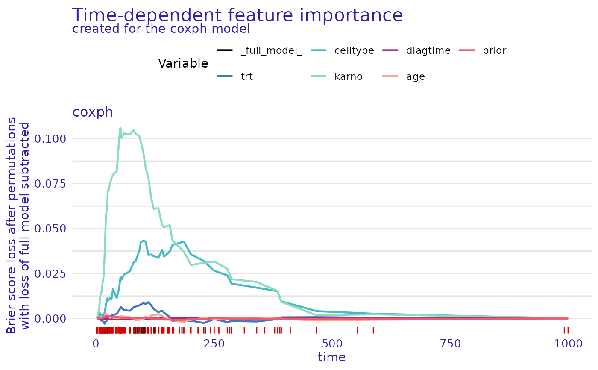

Dataset Level Variable Importance for Survival Models
Source:R/model_parts.R
model_parts.surv_explainer.RdThis function calculates variable importance as a change in the loss function after the variable values permutations.
Usage
model_parts(explainer, ...)
# S3 method for surv_explainer
model_parts(
explainer,
loss_function = survex::loss_brier_score,
...,
type = "raw",
output_type = "survival",
N = 1000
)Arguments
- explainer
an explainer object - model preprocessed by the
explain()function- ...
Arguments passed on to
surv_feature_importance,surv_integrated_feature_importanceBnumeric, number of permutations to be calculated
variablesa character vector, names of variables to be included in the calculation
variable_groupsa list of character vectors of names of explanatory variables. For each vector, a single variable-importance measure is computed for the joint effect of the variables which names are provided in the vector. By default, variable_groups = NULL, in which case variable-importance measures are computed separately for all variables indicated in the variables argument
labellabel of the model, if provides overrides x$label
- loss_function
a function that will be used to assess variable importance, by default
loss_brier_scorefor survival models. The function can be supplied manually but has to have these named parameters (y_true,risk,surv,times), wherey_truerepresents thesurvival::Survobject with observed times and statuses,riskis the risk score calculated by the model, andsurvis the survival function for each observation evaluated attimes.- type
a character vector, if
"raw"the results are losses after the permutation, if"ratio"the results are in the formloss/loss_full_modeland if"difference"the results are of the formloss - loss_full_model- output_type
either
"survival"or"risk"the type of survival model output that should be used for explanations. If"survival"the explanations are based on the survival function. Otherwise the scalar risk predictions are used by theDALEX::model_profilefunction.- N
number of observations that should be sampled for calculation of variable importance. If
NULLthen variable importance will be calculated on the whole dataset.
Value
An object of class c("model_parts_survival", "surv_feature_importance"). It's a list with the explanations in the result element.
Details
Note: This function can be run within progressr::with_progress() to display a progress bar, as the execution can take long, especially on large datasets.
Examples
# \donttest{
library(survival)
library(survex)
cph <- coxph(Surv(time, status) ~ ., data = veteran, model = TRUE, x = TRUE, y = TRUE)
rsf_ranger <- ranger::ranger(Surv(time, status) ~ .,
data = veteran,
respect.unordered.factors = TRUE,
num.trees = 100,
mtry = 3,
max.depth = 5
)
cph_exp <- explain(cph)
#> Preparation of a new explainer is initiated
#> -> model label : coxph ( default )
#> -> data : 137 rows 6 cols ( extracted from the model )
#> -> target variable : 137 values ( 128 events and 9 censored ) ( extracted from the model )
#> -> times : 94 unique time points , min = 1 , mean = 119.9706 , max = 845.56
#> -> times : ( generated from y with method quantiles )
#> -> predict function : predict.coxph with type = 'risk' will be used ( default )
#> -> predict survival function : predictSurvProb.coxph will be used ( default )
#> -> predict cumulative hazard function : -log(predict_survival_function) will be used ( default )
#> -> model_info : package survival , ver. 3.3.1 , task survival ( default )
#> A new explainer has been created!
rsf_ranger_exp <- explain(rsf_ranger,
data = veteran[, -c(3, 4)],
y = Surv(veteran$time, veteran$status)
)
#> Preparation of a new explainer is initiated
#> -> model label : ranger ( default )
#> -> data : 137 rows 6 cols
#> -> target variable : 137 values ( 128 events and 9 censored )
#> -> times : 94 unique time points , min = 1 , mean = 119.9706 , max = 845.56
#> -> times : ( generated from y with method quantiles )
#> -> predict function : sum over the predict_cumulative_hazard_function will be used ( default )
#> -> predict survival function : stepfun based on predict.ranger()$survival will be used ( default )
#> -> predict cumulative hazard function : stepfun based on predict.ranger()$chf will be used ( default )
#> -> model_info : package ranger , ver. 0.14.1 , task survival ( default )
#> A new explainer has been created!
cph_model_parts_brier <- model_parts(cph_exp)
print(head(cph_model_parts_brier$result))
#> times _full_model_ trt celltype karno diagtime age
#> 1 1.00 0.01450469 0.01455725 0.01400237 0.01470793 0.01450509 0.01453234
#> 2 1.36 0.01450469 0.01455725 0.01400237 0.01470793 0.01450509 0.01453234
#> 3 2.72 0.02131799 0.02148355 0.02072000 0.02180318 0.02132012 0.02146159
#> 4 4.24 0.03395903 0.03385417 0.03375063 0.03550854 0.03396162 0.03464676
#> 5 7.00 0.05085721 0.05130654 0.05163494 0.05544436 0.05086095 0.05174214
#> 6 8.00 0.07237285 0.07225545 0.07541766 0.08139359 0.07238253 0.07329327
#> prior _baseline_ permutation label
#> 1 0.01452230 0.01447912 0 coxph
#> 2 0.01452230 0.01447912 0 coxph
#> 3 0.02138325 0.02154694 0 coxph
#> 4 0.03402121 0.03567337 0 coxph
#> 5 0.05087601 0.05697359 0 coxph
#> 6 0.07256685 0.08552199 0 coxph
plot(cph_model_parts_brier)

rsf_ranger_model_parts <- model_parts(rsf_ranger_exp)
print(head(rsf_ranger_model_parts$result))
#> times _full_model_ trt celltype karno diagtime age
#> 1 1.00 0.01020100 0.01062089 0.01143752 0.01266041 0.01134843 0.01227909
#> 2 1.36 0.01020100 0.01062089 0.01143752 0.01266041 0.01134843 0.01227909
#> 3 2.72 0.01492073 0.01549866 0.01629927 0.01817951 0.01766186 0.01779349
#> 4 4.24 0.02100861 0.02192129 0.02312789 0.02926917 0.02378542 0.03156252
#> 5 7.00 0.03559479 0.03765112 0.03838045 0.04955837 0.03994750 0.04776901
#> 6 8.00 0.04970427 0.05217876 0.05501612 0.07449774 0.06023354 0.06252833
#> prior _baseline_ permutation label
#> 1 0.01046379 0.01507678 0 ranger
#> 2 0.01046379 0.01507678 0 ranger
#> 3 0.01537112 0.02263889 0 ranger
#> 4 0.02154683 0.03963706 0 ranger
#> 5 0.03608750 0.06206422 0 ranger
#> 6 0.05100464 0.09157016 0 ranger
plot(cph_model_parts_brier, rsf_ranger_model_parts)
 # }
# }